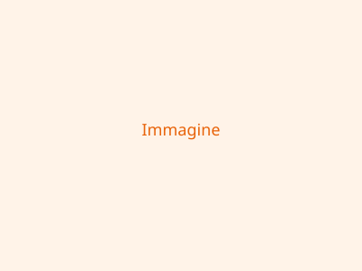

La Nostra Mission
La Rosa dei Venti APS nasce dalla volontà di promuovere la partecipazione civica e la coesione sociale nel territorio. Crediamo che ogni comunità abbia le risorse per crescere, e il nostro compito è quello di far emergere queste potenzialità attraverso progetti concreti, dialogo aperto e collaborazione tra cittadini, istituzioni e realtà locali.
Ci impegniamo ogni giorno per offrire spazi di incontro, formazione e scambio culturale, convinti che l'inclusione e la solidarietà siano fondamenta indispensabili per uno sviluppo sostenibile e umano. Le nostre attività spaziano dall'educazione non formale alla valorizzazione del patrimonio locale, passando per iniziative di supporto alle fasce più vulnerabili della popolazione.
Attraverso la rete di volontari, partner e sostenitori che ci accompagnano, continuiamo a costruire ponti tra le persone e a dare voce a chi spesso non viene ascoltato. Ogni progetto che realizziamo è un passo in avanti verso una comunità più giusta, aperta e consapevole del proprio valore.
I Nostri Valori
Inclusione
Promuoviamo la partecipazione attiva di tutti i cittadini.
Territorio
Valorizziamo le risorse e le peculiarità del nostro territorio.
Cultura
Sosteniamo la crescita culturale come strumento di emancipazione.
Il Nostro Team

Mario Rossi
Presidente
Laura Bianchi
Vice Presidente
Marco Verdi
Segretario